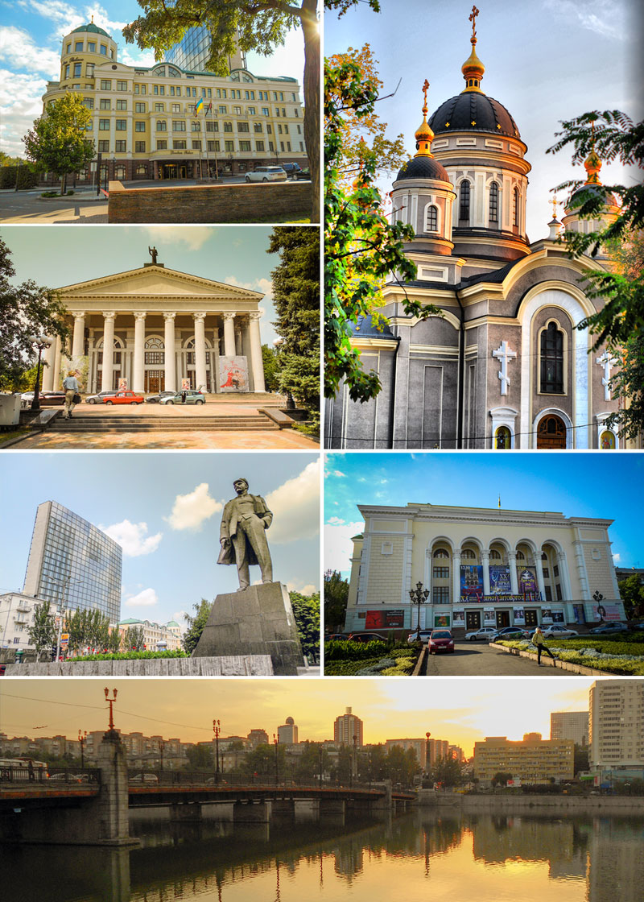
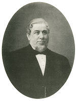
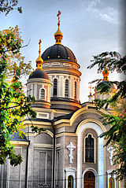
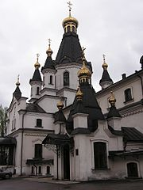
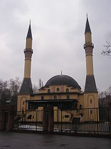
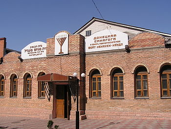

Материал из Википедии — свободной энциклопедии
Доне́цк (укр. Донецьк; Юзовка в 1869—1924, Сталин в 1924—1929, Сталино в 1929—1961) — город на востоке Украины, на реке Кальмиус. Согласно законодательству Украины — административный центр Донецкой области. С апреля 2014 года контролируется непризнанной Донецкой Народной Республикой и рассматривается ею как столица.
Пятый город Украины по количеству населения, численность которого на 1 января 2014 года составляла 950372 человек. На территории, подчинённой Донецкому горсовету, на 1 января 2014 года проживало 965 828 человек
Освоение земель в районе Донецка было начато казаками Войска Донского и Войска Запорожского в XVII веке.
В 1869 году валлийцем Джоном Хьюзом (англ. John Hughes) начинается строительство металлургического завода с рабочим посёлком Юзовка (Юзово) Бахмутского уезда Екатеринославской губернии. Дату постройки посёлка принято считать временем основания города Донецка. Юзовка делилась на две части — заводская и «Новый свет». Центральная часть города развивалась вдоль направления на север от металлургического завода к железнодорожной станции. В 1889 году к югу от Юзовки был сооружён машиностроительный и чугунолитейный завод Э. Т. Боссе и Р. Г. Геннефельда, мастерская по ремонту горно-шахтного оборудования — ныне Рутченковский машиностроительный завод. В 1916 году построены два коксохимических завода, а в 1917 — первый в Российской империи азотный завод — ныне Донецкий завод химреактивов. С быстрым развитием производственных сил, образованием крупных промышленных предприятий стремительно росло население Юзовки. В 1917 году посёлок Юзовка получил статус города. В составе Украинской Советской Социалистической Республики (с 30 декабря 1922 года Союза Советских Социалистических Республик). Сталино — административный центр с апреля 1923 года по 1924 год Юзовского округа, с 1924 года по июнь 1925 года Сталинского округа Донецкой губернии, с июня 1925 года по июль 1930 года административный центр Сталинского округа непосредственно подчинённого правительству Украинской ССР. В 1932 году город стал центром Донецкой области. В 1938 году Донецкая область была разделена на две области: Сталинскую и Ворошиловградскую.
19 октября 1941 года немецкая 1-я танковая армия прорвалась в Сталино. 20 октября 1941 года немецкая 1-я танковая армия заняла город. С 21 октября 1941 года по 8 сентября 1943 года город был оккупирован нацистской Германией. В середине 1942 года шла работа по созданию Генерального комиссариата Сталино, и передаче его из-под командования военной администрации гражданским властям. Генеральный комиссариат Сталино включал в себя четыре окружных комиссариата: Мариупольский, Сталинский, Горловский, Ворошиловоградский. Однако, из-за наступления Красной армии от этих планов отказались.
9 ноября 1961 года Указом Президиума Верховного Совета Украинской ССР Сталинская область переименована в Донецкую и город Сталино переименован в Донецк. Город и область были так названы в честь реки — Северского Донца в 1932 году. На то время в состав области входили современная Донецкая и Луганская области, а Северский Донец был центральной водной артерией. В апреле 1978 года население Донецка превысило миллион жителей, однако к 2012 году, вследствие демографического кризиса, сильно сократилось. В 2010 году по итогам исследования «Рейтинг ТОП-100. Лучшие города и регионы Украины» Донецк был награждён дипломом первой степени в номинации «Лучший город по уровню социально-экономического развития среди городов с населением свыше 500 тысяч человек».
7 апреля 2014 года Донецк был взят под контроль вооружёнными формированиями непризнанной Донецкой Народной Республики.
Город разделён на 9 административных районов:
Во всех районах города созданы районные советы, которые подчинены Донецкому городскому совету.
Численность наличного населения го́рода на 1 января 2014 года составила 949 825 человек, на 1 января 2013 года — 953 217 человек, на 1 января 2012 года — 955 041 человек.
По приблизительным оценкам сайта ГУС Донецкой области Укрстата (Донецкстата) на 1 июня 2015 года в городе проживает 932 562 человека наличного населения и 923 897 постоянных жителей.
На территории, подчинённой Донецкому горсовету, на 1 июля 2015 года проживало 966 341 человек наличного населения и 957 630 постоянных жителей по данным ГУС ДНР и соответственно 947 868 человек наличного населения и 939 217 постоянных жителей по приблизительным оценкам сайта ГУС Донецкой области Укрстата (Донецкстата); на 1 июня 2015 года проживало 966 887 человек наличного населения и 958 176 постоянных жителей по данным ГУС ДНР и соответственно 948 427 человек наличного населения и 939 776 постоянных жителей по приблизительным оценкам сайта ГУС Донецкой области Укрстата (Донецкстата); на 1 мая 2014 года — в рамках горсовета — 963 861 человек наличного населения и 955 210 постоянных жителей; на 1 января 2014 года — 965 828 человек наличного населения, на 1 января 2013 года — 969 297 человек наличного населения, на 1 января 2012 года — 971 096 человек наличного населения и 962 400 постоянных жителей.
Рейтинг города (по численности населения) по состоянию на 1 января 2015 года:
| Место в мире | Место в Европе | Место в бывшем СССР | Место на Украине | Место в области |
|---|---|---|---|---|
| 499 | 36 | 27 | 5 | 1 |
Данные переписи населения 2001 года:
| N | Национальность | Количество | Уд. вес(%) |
|---|---|---|---|
| 1 | Русские | 493 392 | 48,15 |
| 2 | Украинцы | 478 041 | 46,65 |
| 3 | Белорусы | 11 098 | 1,15 |
| 4 | Греки | 11 015 | 0,99 |
| 5 | Евреи | 5087 | 0,50 |
| 6 | Татары | 4987 | 0,49 |
| 7 | Армяне | 4050 | 0,40 |
| 8 | Азербайджанцы | 2098 | 0,20 |
| 9 | Грузины | 2073 | 0,20 |
| Другие | 13 001 | 1,27 | |
| Всего | 1 024 678 | 100,00 |
До начала военных действий Донецк занимал 2-е место в области по объёмам промышленного производства (после Мариуполя) и 1-е место по темпам роста. На территории города расположена одна из крупнейших по объёмам инвестиций свободных экономических зон («СЭЗ») Украины — СЭЗ «Донецк». Вместе с городом Макеевка — являлся крупнейшим промышленным узлом Украины. Характерной чертой хозяйственного комплекса Донецка является многоотраслевая специализация промышленности, сочетающаяся с развитым транспортным и финансовым хозяйством города. В промышленности представлены практически все отрасли народного хозяйства, однако, удельный вес металлургии (как чёрной, так и цветной), угольной, химической (в том числе коксохимической) промышленности и тяжёлого машиностроения наиболее высок. Наряду с традиционными отраслями тяжёлой промышленности в последние годы развиваются также лёгкая, пищевая, деревообрабатывающая промышленность, машиностроение.
Экономический потенциал города составляют:
На промышленных предприятиях города занято более 119 тысяч человек.
Общий объём реализованной промышленной продукции в 2011 году — 50,0 млрд грн.
В её структуре наибольший удельный вес имеют: предприятия по производству и распределению электроэнергии, газа и воды (31,9 %), предприятия металлургии (23,1 %), пищевой промышленности (16,2 %), угольной промышленности (10,5 %).
Во всех районах города созданы районные советы, которые подчинены Донецкому городскому совету.
В 2012 году деловой журнал Forbes признал Донецк лучшим городом Украины для ведения бизнеса по пяти категориям: человеческому капиталу, покупательной способности, инвестиционному климату, экономической устойчивости, а также инфраструктуре и комфорту.
В городе представлены православные и греко-католические церкви, протестантские молитвенные дома и католические костёлы, мечети и синагоги. Наиболее широко представлены культовые сооружения православной церкви (преимущественно Московского патриархата).
   Донецк — это хрупкий, безоблачный рай,
Как город цветов и бульваров.
Магическим шепотом радует край
Шахтерских дорог, тротуаров.
Бессмертным огнем будет вечность гореть
За дух шахтеров донецких.
А Кальмиус будет тихо шуметь
Под смех безмятежный детский.
А рядом с рекою виднеется сквер,
Прекраснейший парк Щербакова.
Широкой алеей подступит к тебе
Донецкой сказки основа.
Оранжево-черным раскрасят закат
Цвета бесконечной арены.
Хрустальный и чистый роз аромат
Донецкой сказки-царевны.